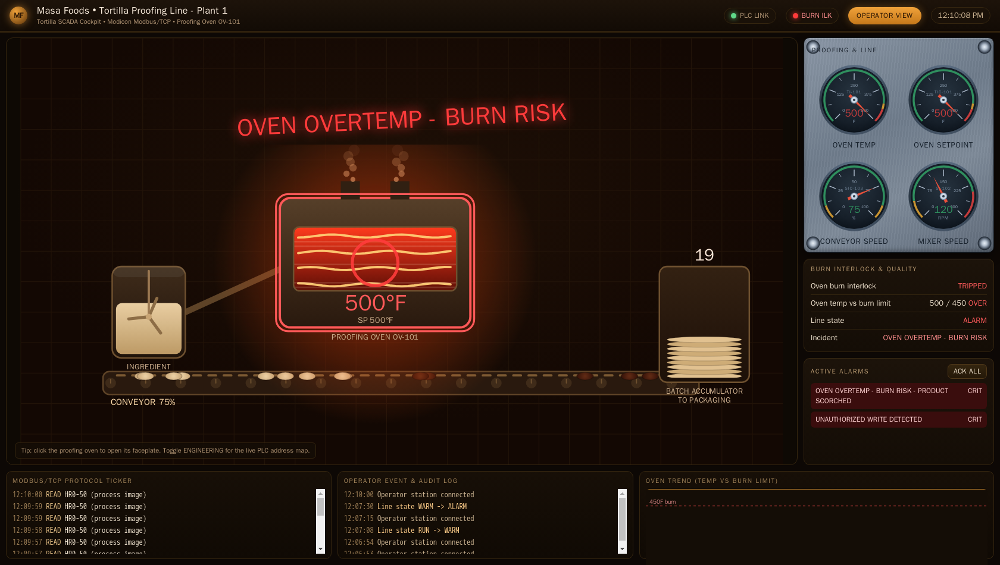

Exercise ICSPT-3.4: The Silent Conveyor
Engagement Status
| Client | Masa Foods, Inc. (fictional) |
|---|---|
| Role | OT Security Engineer, Plant 1 |
| Phase | Discovery Enumeration Exploitation (independent) Reporting |
What you know so far: You can read and write holding registers with command-line tools, you have seen the MC-7200 burn interlock fire in response to a write attack, and you understand how to make reversible changes on a live PLC. The last Phase 3 exercise is an independent coil-write hunt combined with a detection rule, and the core skill is detection: reading the write off the wire and turning it into a signature.
Environment Checklist
Every ICSPT exercise assumes you read the Before-You-Begin section in Exercise 1.1 (Touring Masa Foods) first. If you have not, open that page now: it explains the two attacker-host options (your own Kali over VPN, or the browser-mounted RangeBox) and walks you through the one-time /etc/hosts setup that lets you call every Plant 1 target by its friendly name.
Exercise 3.4 targets the tortilla PLC's Modbus coils and reads from the historian to confirm the attack. Confirm name resolution and reachability before you start.
Kali
Expected: three name-to-IP lines, two successful pings, succeeded! on TCP/502, and HTTP 200 from the historian. If getent returns nothing, re-run the /etc/hosts block from Exercise 1.1. If the TCP probes fail, fix connectivity before continuing.
Scenario
Night-shift operators have filed maintenance tickets about a Plant 1 conveyor that "stops for a few seconds and starts again" at random. Controls engineering has torn the conveyor motor apart three times and found nothing mechanically wrong. Reyna Alvarado suspects an attacker is writing the conveyor run coil directly over Modbus/TCP from outside the plant and she wants your confirmation, plus a Snort rule she can hand to the SOC.
Why this matters
Adversaries who understand OT choose low-observable attacks that look like equipment faults. An oven that overheats is loud. A conveyor that hiccups for three seconds on a random Tuesday is a maintenance ticket. The delta is the difference between "we caught the adversary" and "we spent two months tearing apart a perfectly good motor." Plants that do not treat intermittent production faults as potential security incidents become training grounds for attackers precisely because every deviation gets absorbed by the maintenance queue.
A pen tester who can confirm "this is not a motor fault, it is a coil write from an unauthorized source" saves the plant two things they do not usually account for until after the fact. First, the mechanical labor cost of tearing down equipment that is not actually broken, which in a real plant runs into tens of thousands of dollars per false-positive teardown. Second, the hidden risk that by the time maintenance gives up on the motor and calls cyber, the attacker has had weeks to escalate. Every hour the intermittent fault is logged as "mechanical, intermittent, unresolved" is an hour the adversary spends inside the plant network unchallenged.
The Snort rule is the other half of the deliverable. Confirming the attack once is not useful; catching the next instance in real time is. A one-line rule Reyna can hand to the SOC turns a one-off investigation into a continuous detection. That is the outcome Reyna is paying for.
The MC-7200 tracks every transition of the conveyor run coil in input register 30004. Your tasks:
- Identify the Modbus coil mapped to the conveyor run command
- Reproduce the attack by writing that coil to its stop state
- Confirm the transition counter at
30004increments - Capture the write on the wire and read its Modbus function code and target coil address
- Draft a single-line Snort rule that alerts on a Modbus coil write to the conveyor coil from sources outside the HMI subnet, and be able to explain every field
- Compose the final flag
Masa expects the flag in the compact form:
You derive each token yourself: the first token is the coil identity you confirm from the register map and the wire capture, the second is the run-coil value the attacker drives it to, and the last two describe the detection rule intent. The platform validates the assembled string, so none of the three tokens is spelled out for you here.
Exercise 3.4 is independent. There is no walkthrough. Use the hints below only when you are stuck.
| Credentials in scope | Username | Password | Where it is used |
|---|---|---|---|
| Operator HMI | plant_op |
masa_op_2025 |
Reference only; no login required |
The operator cockpit
Plant 1 runs a live operator cockpit for the tortilla proofing line. Open it in a browser at the address shown for ophmi-tortilla in the Exercise Network panel (HTTP, port 80). The cockpit shows the conveyor belt animation and its run indicator, the proofing-oven and mixer gauges, and the line alarm state in real time, so when you toggle the conveyor run coil you can watch the belt stop and the run indicator drop on the same screen the night-shift operators were staring at.

Flip the cockpit into its Engineering view and every element is labelled with the live Modbus address behind it, so the conveyor reads its coil and transition-counter addresses straight off the HMI. The coil you are about to write and the input register you confirm it with both sit one click away on the operator console.

Objectives
- Identify the Modbus coil mapped to the conveyor run command
- Write the conveyor coil to its stop state and observe the transition
- Read the conveyor transition counter from input register
30004 - Capture the coil write on the wire and read its function code and target coil address
- Draft a Snort rule that alerts on a Modbus coil write to the conveyor coil, and explain every field
- Compose the flag describing the attack and detection rule
| Detail | Value |
|---|---|
| Difficulty | Intermediate (independent) |
| Estimated Time | 45 to 60 minutes |
| Prerequisites | Exercises 3.1, 3.2, 3.3 |
| Flag | Source | Found? |
|---|---|---|
OCR{<coil_address>_<state>_<rule_intent>} |
Composite coil address, value, and rule intent |
Background: Modbus Coils and Function Code 5
Coils are single-bit outputs in the Modbus data model. A coil represents a discrete on/off signal: a valve is open or closed, a relay is energized or not, a motor is commanded to run or stop. Unlike holding registers (which are 16-bit words), coils are addressed individually.
| Function Code | Name | Direction |
|---|---|---|
1 |
Read Coils | Client reads coil states |
5 |
Write Single Coil | Client writes one coil |
15 |
Write Multiple Coils | Client writes a contiguous block of coils |
A Write Single Coil (FC5) request sets a single coil to ON (0xFF00) or OFF (0x0000). The wire encoding of the PDU is simple:
The MC-7200 register map on the docs portal documents the first four coils as:
| Coil (Modbus address) | Wire address | Meaning |
|---|---|---|
00001 |
0 |
line_run master enable |
00002 |
1 |
conveyor_run conveyor motor command |
00003 |
2 |
oven_enable burner enable |
00010 |
9 |
e_stop emergency stop (latching) |
The conveyor run coil is Modbus coil address 00002, wire address 1. An FC5 write of 0x0000 to wire address 1 tells the conveyor motor to stop. A follow-up write of 0xFF00 restarts it. An attacker who toggles the coil in this pattern causes the observed "stops for a few seconds and starts again" symptom. The 0x0000 value and the 0xFF00 value are the two states the run coil carries on the wire, and you confirm which one the attacker drives it to by reading the coil back after the write.
Input Register 30004: Transition Counter
The MC-7200 firmware increments an internal counter each time the conveyor run coil changes state. The counter is exposed read-only in input register 30004 (wire address 3, function code 4). A healthy operational pattern keeps the counter stable; an attack pattern shows the counter jumping by two each round trip (ON-to-OFF plus OFF-to-ON).
Tools You Will Need
| Tool | Purpose | Check |
|---|---|---|
mbpoll |
Modbus/TCP command-line client: read coils, write a single coil, read the input register, no code | which mbpoll |
Wireshark / tshark |
Capture the coil write and decode its Modbus function code and target coil on the wire | tshark --version |
| Snort (or Suricata) | The IDS engine the rule runs in; used to reason about the signature and, if available, test it against a capture | snort --version |
curl |
Confirming the operator HMI reports the conveyor stop state | curl --version |
The detection half of this exercise lives in tshark and the IDS, not in a script.
Suggested Methodology
Stage 1: Read the Current State
Pull the coil states and the transition counter with mbpoll. There is no client to write; one command per object covers it. Record the baseline values so you can prove the delta after the attack.
mbpoll selects the Modbus object by -t: -t 0 is coils (function codes 1 and 5), -t 3 is input registers (function code 4). The -r option is 1-based, so it counts from 1 while Modbus wire addresses count from 0. The conveyor coil sits at wire address 1, which is -r 2; the transition counter sits at wire address 3 in the input-register space, which is -r 4. Read the first three coils as a block (-r 1 -c 3) so you capture line_run, conveyor_run, and oven_enable in one transaction.
Kali
# Read coils 00001..00003 (line_run, conveyor_run, oven_enable)
mbpoll -1 -a 1 -t 0 -r 1 -c 3 plc1.masa.local
# Read the transition counter in input register 30004 (wire address 3 -> -r 4)
mbpoll -1 -a 1 -t 3 -r 4 -c 1 plc1.masa.local
-1 polls once and exits, -a 1 is the Modbus unit id, -t 0 selects coils, -r 1 -c 3 reads the three-coil block starting at coil 00001, and the second command switches to -t 3 (input registers) at -r 4 for the counter. Port 502 is the default.
Record the conveyor coil value (the second coil in the block) and the counter value. Both are your before picture.
Stage 2: Capture the Write, Then Reproduce It
Detection is the point of this exercise, so start the capture before you send the write. Sniff TCP port 502 on the interface that reaches the PLC. Run the capture in one terminal and the write in another, or save the capture and open it in Wireshark afterward.
Start a capture scoped to the PLC and Modbus port:
Kali
With the capture running, send the single coil write. mbpoll writes a coil when you give it a value argument after the address. The value is 0 or 1; the off state is 0, which mbpoll encodes on the wire as the FC5 value 0x0000. The conveyor coil is wire address 1, so the write target is -r 2.
Kali
# Terminal 2: write the conveyor run coil to its stop value
mbpoll -1 -a 1 -t 0 -r 2 0 plc1.masa.local
0 is the value to write, which turns this into a Write Single Coil (FC5) rather than a read. -r 2 is coil wire address 1 (the conveyor run coil) in mbpoll's 1-based numbering.
Now confirm the effect. Read the coil back and read the counter again:
The conveyor coil now reads its stop value and the transition counter has moved up by one. Stop the tshark capture (Ctrl+C in Terminal 1) so the write is recorded for the next stage.
Stage 3: Read the Write Off the Wire
Open /tmp/conveyor-write.pcapng in Wireshark and set the display filter to the coil-write function code. Wireshark decodes the Modbus layer, so you read the function code and the target coil address straight from the packet rather than trusting the tool that sent it.
| Display filter | What it shows |
|---|---|
modbus |
every Modbus PDU in the capture |
modbus.func_code == 5 |
only Write Single Coil requests |
modbus.func_code == 15 |
only Write Multiple Coils requests (the evasion path) |
Filter to modbus.func_code == 5 and select the write request. The Modbus tree shows the Function Code (5, Write Single Coil), the Reference Number (the zero-based wire address of the coil you wrote), and the Data value (0x0000 for the stop state, 0xFF00 for run). The Reference Number is the coil identity your flag needs, and the Data value is the state token.
You can read the same fields without the GUI:
Kali
tshark -r /tmp/conveyor-write.pcapng -Y "modbus.func_code == 5" \
-T fields -e modbus.reference_num -e modbus.data
-r reads the saved capture, -Y applies the same display filter as the GUI, and -T fields -e ... prints just the coil reference number and the written value so you can confirm the wire address and the state in one line.
Stage 4: Confirm the HMI Shows the Stall
The primary confirmation is visual. Open http://hmi.masa.local/ in a browser (HMI IP from the Exercise Network panel, port 80); the Tortilla Line cockpit shows the conveyor stopped and the line-state / interlock change your coil write drove, the same operator cockpit pictured earlier in this workbook. The conveyor indicator sits in gray with the belt animation dropped.
Cross-check the same state from the CLI. Fetch the state JSON and confirm it reports the same conveyor stop the cockpit shows.
Kali
The response is JSON. Read theconveyor_run field; it reports the run state the coil now holds, matching both what you wrote and what the cockpit displays.
When the run coil drops to its stop value the cockpit drops the conveyor belt animation and clears the conveyor run indicator, and the line alarm surface lights the same way it does for any unsafe write on the Plant 1 cockpit. The shot below shows that alarm surface at full tilt during a sibling burn trip on the same line, so you can see exactly which banners and gauges the night-shift operators should have flagged instead of opening a motor maintenance ticket.

Stage 5: Restore Operations, Then Draft and Explain the Rule
Write the coil back to its run value to restore operations. The run state on the wire is 0xFF00, which mbpoll writes when you pass the value 1.
Kali
Same write form as the attack, with the value1 instead of 0, so the conveyor motor is commanded back to run before you leave.
Now draft the Snort rule that catches the next instance. Save it in a scratch file such as /tmp/plant1_conveyor.rules:
Drafted Snort rule
Explain every field before you hand it over. A rule you cannot defend field by field is a rule you cannot tune, so walk through it the way the SOC will ask you to. The fields you derived from the capture in Stage 3 are the content match and the offset.
| Field | Value in this rule | What it does and why |
|---|---|---|
| Action | alert |
Generate an alert event and log the packet; it does not block. A protocol-aware firewall would drop, but a SOC detection rule alerts |
| Protocol | tcp |
Modbus/TCP rides on TCP, so the rule inspects the TCP stream |
| Source | !$HMI_NET any |
Source address !$HMI_NET (any host NOT in the HMI subnet) and any source port. The negation is what makes legitimate operator writes silent and outside writes loud |
| Direction | -> |
Match traffic flowing from the source toward the destination only |
| Destination | $PLC_NET 502 |
The PLC subnet on the Modbus port. Limits the rule to traffic actually aimed at a PLC's Modbus listener |
msg |
descriptive text | The alert label the SOC sees. Name the coil and the untrusted source so a triaging analyst knows what fired without reading the rule body |
flow |
to_server,established |
Only inspect client-to-server packets on an already-established TCP session. Drops out half-open scans and server responses, cutting false positives |
content |
"\|00 05 00 01\|" |
The byte pattern that defines a coil-write to this coil. The bytes are the last length byte of the Modbus header (00), the function code (05 = Write Single Coil), and the two-byte coil reference number (00 01 = wire address 1, the conveyor coil). Match these four bytes and you have an FC5 write to exactly this coil |
offset |
7 |
Start the content match 7 bytes into the TCP payload. The Modbus MBAP header is 7 bytes (transaction id, protocol id, length, unit id), so byte 6 is the last length byte and byte 7 begins the PDU. Anchoring at offset 7 means the four-byte pattern lands on header-length-byte + function-code + coil-address and nowhere else, so a coil value that happened to contain 00 05 00 01 in its data cannot trigger a false match |
sid |
1000001 |
Signature id. Local rules use the 1000000+ range so they never collide with vendor rule ids |
rev |
1 |
Revision number. Bump it every time you edit the rule so the engine reloads the new version |
The content bytes are not magic numbers: you read the function code (05) and the coil reference number (00 01) straight off the Wireshark decode in Stage 3. The rule is the wire capture turned into a standing signature.
Suricata equivalent
Suricata parses the Modbus layer, so you can write the same intent against decoded keywords instead of a raw byte match: alert modbus !$HMI_NET any -> $PLC_NET 502 (msg:"Modbus write to conveyor coil from untrusted source"; app-layer-protocol:modbus; ...; sid:1000001; rev:1;). The byte-offset Snort form above is portable to either engine and makes the wire structure explicit, which is why it is the one to learn first.
Stage 6: Compose the Flag
The flag is a compact descriptor of what you proved and what you built. You already hold every token:
- The first token is the conveyor coil identity. You confirmed it from the MC-7200 register map and saw the same coil reference number decoded in the Stage 3 capture
- The second token is the run-coil value the attacker drives it to. You read it back after the write and saw it in the Modbus Data field on the wire
- The last two tokens name the detection rule's intent: the protocol it watches and the action it takes when an unauthorized coil write appears
Assemble the three into the template OCR{<coil_address>_<state>_<rule_intent>} and submit it in the platform flag box. The platform validates the composite immediately, so the finished string is not printed here.
Detection summary (fill in from your own work):
Field Value Coil wire address Run-coil value at trip Rule SID Rule content match Flag: _________
Output Interpretation
- A transition counter that jumps by
1means the attacker toggled the coil once. A jump of2means one full stop-then-run cycle, which matches the "stops for a few seconds and starts again" symptom - A counter that climbs every hour but never steadies indicates sustained automated toggling, which is exactly the fingerprint of a scripted attacker
- The Snort content match
|00 05 00 01|only fires on FC5 writes targeting coil wire address1. Writes to other coils (for example|00 05 00 02|for the oven enable) will not trigger this rule. That is intentional; you can layer additional SIDs for other sensitive coils - The rule uses
offset:7because the four-byte content match starts at the last byte of the MBAP length (0x00) and covers the first three bytes of the PDU (0x05 0x00 0x01): the function code and the coil reference number you read off the wire in Stage 3 - In Wireshark,
modbus.func_code == 5isolates the offending Write Single Coil request andmodbus.func_code == 15reveals the Write Multiple Coils evasion variant. The function-code filter is how you separate the attack from the steady stream of FC1 and FC4 polling the HMI generates
Analysis Questions
1. Why does the rule use !$HMI_NET rather than a specific source IP?
Reveal answer
Source IP allowlists break every time the HMI host moves, gets a new DHCP lease, or is replaced. Negating the HMI subnet is more resilient: as long as the HMI stays inside a known subnet, any FC5 write to the conveyor coil from outside that subnet will alert. In a real deployment you would define $HMI_NET as the operations VLAN address block in the Snort configuration.
2. How would you extend this detection to cover the full write function code family (FC5, FC6, FC15, FC16)?
Reveal answer
Write four rules, one per function code, with appropriate content matches for the byte immediately after the unit identifier. Some SOC platforms let you combine them into a single rule with a regex or a content-list match, but four targeted rules are easier to reason about and tune for false positives.
3. Could an attacker evade this rule by writing to coil 00002 through function code 15 (Write Multiple Coils) instead of 5?
Reveal answer
Yes. FC15 writes a contiguous block of coils starting at a specified address. An attacker who writes a two-coil block starting at address 1 would toggle the conveyor coil without hitting the FC5 content match. The defense is to add a companion rule for FC15 that matches on the starting address. The general pattern in detection engineering is the same: every rule you write exposes at least one evasion path, and your ruleset must be audited for coverage.
4. Why is the transition counter at 30004 a better investigation signal than the coil state itself?
Reveal answer
Coil state is instantaneous. If the attacker toggles the coil off and back on within a single HMI polling window, the operator never sees the state change. The transition counter is monotonic: every toggle increments it by one regardless of how fast the change happens. A counter that jumps when the HMI polls are quiet is a strong indicator of out-of-band writes.
Defensive Recommendations to Masa
| Finding | Risk | Mitigation |
|---|---|---|
| Unauthenticated FC5 writes accepted from any host on the operations VLAN | Critical | Deploy the Snort rule drafted above, and plan toward a protocol-aware firewall that drops writes from non-HMI sources |
| Conveyor transition counter is not monitored | Medium | Add the counter to the historian scrape and alert on deltas above a baseline |
| HMI subnet not formally defined in plant documentation | Low | Document the operations VLAN as the authoritative $HMI_NET for detection rules |
| No companion rule for FC15 writes | Medium | Author a follow-up Snort rule in the same pattern for function code 15 |
Key Takeaways
- Modbus coils and Function Code
5(Write Single Coil) are a first-class write attack surface alongside holding registers - Transition counters expose attacks that operator polling intervals would hide
- A single Snort content match on the ADU prefix is enough to detect the simplest form of this attack
- Every detection rule has evasion paths. Audit rulesets for function code coverage, not just address coverage
- Reversibility (restoring the coil to ON after the test) is the same operational discipline you used in Exercise 3.3